粟嶋神社/熊本県宇土市
熊本市の南に位置する宇土市。
島原湾にも程近い新開町に粟嶋神社がある。
和歌山の淡嶋神社を総本社とし、淡島、粟島と表記はさまざまだが粟嶋神社は日本中に存在し、主に海の近く、そして女性に御利益のある神社として知られている場合が多い。
女性に御利益…具体的には縁結び、安産、子授け、婦人病平癒、等々といった感じですな。
で、そんな淡嶋コンツェルンの熊本支部、粟嶋神社はミニ鳥居の神社として名高い。
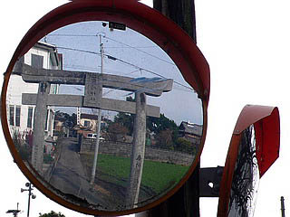 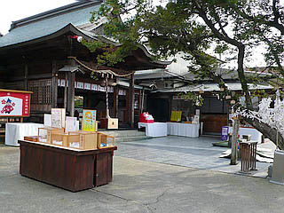
本殿前に建つ3つの小さな石鳥居。
ちなみに天草島原地方を中心とした長崎、熊本県下にはミニ鳥居が数多く存在している。
寛永10（1633）年に開かれたここの粟嶋神社はそんなミニ鳥居信仰の中心地といってよかろう。
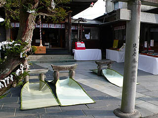 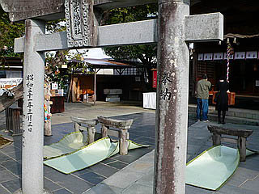
自称日本一のミニ鳥居。
日本一古いミニ鳥居？日本一信仰されているミニ鳥居？それとも日本一小さいミニ鳥居て事？
勿論絵馬もミニ鳥居。
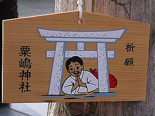
さて。
問題のミニ鳥居にチャレンジである
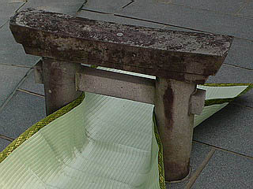
…小さい。小さすぎる。
東大寺大仏殿の柱の潜りぬけをはじめ、この手の潜り系にことごとく失敗してきた小生、しかも毎年の健康診断でも「健康ですけど少し痩せましょうね〜」が医者の挨拶代わりになってしまった今日この頃、ど〜見ても戦う前から敗戦濃厚。
というわけで同行の愚息を代打として差し向ける事にした。
物心つく前から珍寺に引きずりまわされている愚息だけに、父の無念さと事の重大性を察知しすぐさま打席に入る。
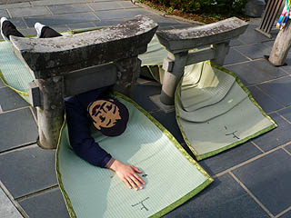
うむ。頼もしいぞ、愚息よ。
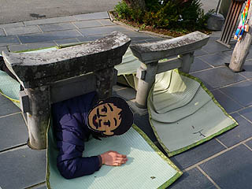
その、肩が抜ければ行けるはず。
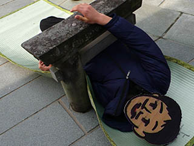
おおお、抜けたか。でかしたぞ！愚息よ！
潜らせた私が言うのもナンだが、この鳥居を潜ったことで何か御利益はあるのか？中学男子…
3基のミニ鳥居を全て潜り抜ければ病気からも潜り抜けられるという謂れがあるそうな。
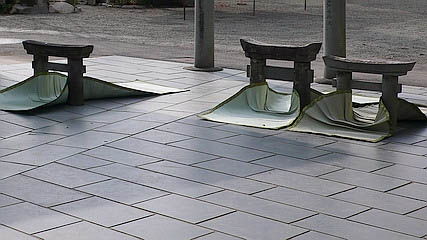
境内の隅には現役を引退したミニ鳥居が建っていた。文化11（1814）年のものだ。
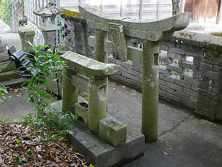
また境内には木製のチンコも。
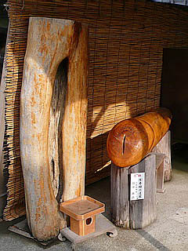 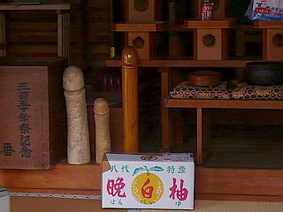
さらに拝殿の隅にミニ鳥居を発見！
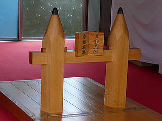
これは平成18年に出来た合格鳥居。
女性にご利益がある粟嶋社としては守備範囲外のポジションだが時代の趨勢には逆らえない、ということか。
愚息よ、潜るのはこっちだったな…
粟嶋神社のホームページはこちら
2007.12.
珍寺大道場 HOME